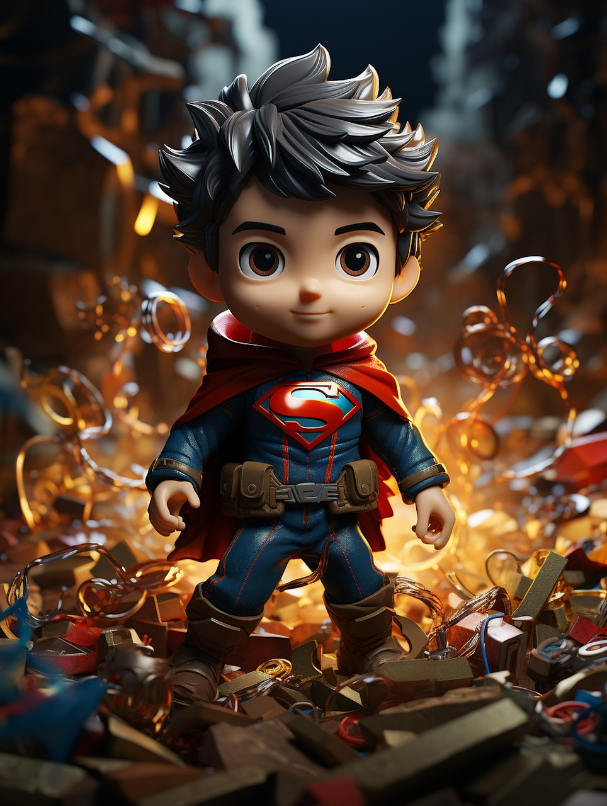
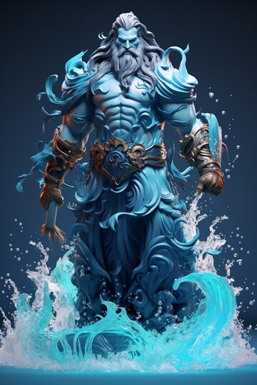

One of the most iconic fictional characters in the world, Batman has dedicated his life to an endless crusade, a war on all criminals in the name of his murdered parents, who were taken from him when he was just a child.
Since that tragic night, he has trained his body and mind to near physical perfection to be a self-made Super Hero. He's developed an arsenal of technology that would put most armies to shame. And he's assembled teams of his fellow DC Super Heroes, like the Justice League, the Outsiders and Batman, Incorporated.

rom his blue uniform to his flowing red cape to the "S" shield on his chest.Superman is one of the most immediately recognizable and beloved DC Super Heroes of all time.
The Man of Steel is the ultimate symbol of truth, justice, and hope. He is the world's first Super Hero and a guiding light to all.

son of a lighthouse keeper and an Atlantean queen, Arthur Curry is the bridge between the surface world and his tumultuous realm of the sea.
Monarch of the undersea realm of Atlantis and King of the Seven Seas, Aquaman is one of the most powerful DC Super Heroes—commanding a kingdom that covers three-quarters of the Earth’s surface, including all the creatures contained within.
Arthur Curry came from humble beginnings, as most of his life was spent exiled from his home, unaware of his noble origins. When he finally took the throne as an adult, he became the most legendary king in Atlantean history.
